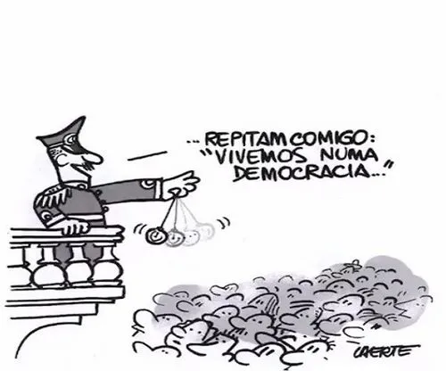
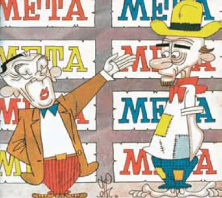
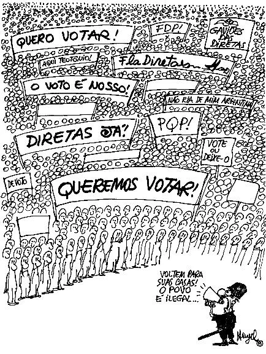

3º Bimestre – 2026
Aluno(a):
No semestre anterior, estudamos as transformações econômicas, sociais e políticas ocorridas durante a Primeira República e a Era Vargas no Brasil. Também refletimos sobre os ideais imperialistas e nacionalistas do início do século XX, que intensificaram disputas internacionais e contribuíram para a formação das alianças militares responsáveis pela eclosão da Primeira Guerra Mundial. Além disso, analisamos como a superprodução, a especulação financeira e as desigualdades sociais provocaram a Crise de 1929, causando impactos econômicos em diferentes partes do mundo.
Neste bimestre, aprofundaremos nossos estudos sobre as consequências da crise de 1929 e compreenderemos como esse contexto favoreceu a ascensão dos regimes totalitários na Europa, contribuindo para o início da Segunda Guerra Mundial. Também analisaremos como os conflitos e disputas ideológicas internacionais influenciaram a política brasileira, especialmente durante a República Populista e o período da Guerra Fria, fortalecendo tensões políticas que culminaram no Golpe Militar de 1964.
Além disso, estudaremos as políticas econômicas e sociais implantadas durante a ditadura militar, os diferentes movimentos de resistência ao regime, como a atuação estudantil, artística e armada e o processo de reabertura democrática, marcado pela mobilização popular e pela luta pela redemocratização do país.
Esperamos que, ao longo deste bimestre, vocês desenvolvam uma visão crítica e ampla sobre os grandes acontecimentos do século XX e seus impactos na história do Brasil e do mundo.
O fenômeno dos regimes totalitários que marcou o século XX representou uma ruptura drástica com as tradições políticas anteriores, estabelecendo um modelo de governança baseado no controle absoluto e na mobilização constante das massas. Diferente das ditaduras autoritárias convencionais, que muitas vezes buscam apenas a desmobilização política, o totalitarismo exigiu a participação ativa e fervorosa da população, fundindo a esfera pública e a privada sob uma única ideologia oficial.
Datado do período entreguerras, entre as décadas de 1920 e 1930, o totalitarismo pode ser compreendido como a elevação do autoritarismo ao máximo.
Segundo Eckhard Jesse, professor de Ciências Políticas na Universidade Técnica de Chemnitz-Zwickau, o totalitarismo é um regime de governo. Esse regime tenta conformar os cidadãos dentro de uma ideologia, usando formas de controle e coação.
Por isso, representa o controle absoluto de uma pessoa, partido ou ideologia política sobre toda uma nação. O líder detém os poderes sobre a vida pública e privada, tendo o militarismo como instrumento de intimidação.
A destruição causada pela guerra, o temor do comunismo e os desafios econômicos colocaram os regimes totalitaristas como possíveis soluções para os problemas sociais. Gradativamente, os movimentos totalitários foram alcançando o apoio popular.
O termo originou-se na década de 1920, como uma forma de se referir ao fascismo italiano, o primeiro regime europeu de caráter totalitarista. Foi a partir dele que o fascismo, enquanto política alternativa, se popularizou na Europa.
Posteriormente, outros países europeus também optaram pelo modelo autoritário. O totalitarismo consolidou sua força quando os nazistas tomaram o poder na Alemanha, no ano de 1933.
Fascismo — O Fascismo surgiu de fato em 1919, com a criação do Fasci Italiani di Combattimento. Grupo fundado por Benito Mussolini, que posteriormente passou a ser chamado de Partido Nacional Fascista. E só em 1922 começou a ganhar fama com a marcha sobre Roma, quando Mussolini foi nomeado primeiro-ministro italiano.
Essa ascensão de Mussolini ao poder aconteceu no contexto de crise política e econômica na Itália, e numa tentativa de solução destes problemas, os italianos estavam dispostos a concordar com essa nova tomada política. Em 1925, Benito Mussolini se autodeclara ditador da Itália, o que consolidou o totalitarismo no país.
O Fascismo pode ser identificado como o primeiro movimento totalitário na Europa, além de ser um dos precursores de políticas conservadoras, e justamente por isso, foi um dos exemplos a ser seguidos pelos demais autoritarismos europeus.
Nazismo — O período entreguerras para a Alemanha foi delicado e cheio de ressentimentos, ainda mais depois do Tratado de Versalhes em 1919, que determinava que a Alemanha fora a responsável por causar a guerra e, por termos do tratado, estava obrigada a reparar os danos de algumas nações da Tríplice Entente.
Com o contexto gerado, o Partido Nacional-Socialista dos Trabalhadores Alemães foi criado em 1919 com o objetivo de reparar o caos que estava instalado. Com a liderança de Adolf Hitler, o Partido Nazista foi a favor de medidas autoritárias para resgatar a Alemanha dos tempos passados.
A ideologia nazista, baseada do livro "Minha Luta", de Hitler, pregava o antimarxismo, antiliberalismo e o antissemitismo — o ódio contra o povo judeu. Ideais esses que foram usados, de maneira autoritária, para defender a raça alemã como algo superior a todos os demais povos.
Durante a Segunda Guerra Mundial, o Partido Nazista usou de retóricas militaristas, expansionistas e de pureza de raça, para exterminar milhões de pessoas que não se encaixavam dentro do padrão de raça alemã.
Outros modelos — Além dos principais exemplos de regimes totalitários que marcaram a Europa do Século XX, outros movimentos com características semelhantes também emergiram, como o Salazarismo em Portugal, e o Franquismo, na Espanha. Com o mesmo contexto de perdas e tristezas do pós-guerra, os cidadãos espanhóis e portugueses estavam desacreditados nos mesmos discursos.
O Salazarismo foi um regime ditatorial entre 1933 e 1974. O termo faz menção a António de Oliveira Salazar, seu líder. Conhecido como o Estado Novo português, o salazarismo foi iniciado com a promulgação de 1933. O período foi marcado por políticas antidemocráticas, antiliberais, centralizadoras, colonialistas e conservadoras. Seu encerramento foi em 1974, partindo da Revolução dos Cravos, golpe civil-militar que destituiu Marcello Caetano, o substituto de Salazar.
O Franquismo faz referência ao general Francisco Franco, que detinha o poder na Espanha entre 1939 e 1975. Desde o início da República Espanhola, o país sofria com vários debates nos setores conservadores e militares, dizendo que essa mudança foi comandada pela esquerda. Com o passar dos anos, Franco e outros simpatizantes do fascismo italiano articularam um golpe contra o governo de esquerda. Francisco Franco instalou um período autoritário na Espanha, que só teve fim após algumas décadas do fim da guerra.
Pontua-se a existência de um debate entre historiadores acerca do caráter totalitário do governo stalinista. Eric Hobsbawm, por exemplo, afirma que a ditadura stalinista não foi totalitária; enquanto outros intelectuais, como Hannah Arendt, compreendem que esse movimento foi totalitário.
Josef Stalin (1879-1953) assumiu o poder da União Soviética após a morte de Lenin. O stalinismo surge mediante uma interpretação particular do Stalin do marxismo, que durou de 1924 até 1953. Os principais aspectos do stalinismo revelam a exclusão da religião da vida pública, o fim da propriedade privada, o culto ao líder, a perseguição de opositores, a militarização, entre outros.
Um dos principais estudos sobre o totalitarismo é da filósofa Hannah Arendt. Segundo ela, o totalitarismo une dois fenômenos em sua potencialidade: o medo e o terror. O Estado total transforma a coletividade em um único corpo, de modo que anula a individualidade. Isso ocorre para a promoção de uma sociedade que pensa da mesma maneira e apoia a atuação do líder totalitário.
A outra modalidade de totalitarismo apresentada pela autora é das pessoas que não acreditavam no que estavam fazendo. Simplesmente agiam para conseguir alguma vantagem pessoal. Para a filósofa, o que as ideologias totalitárias visam não é a transformação do mundo exterior ou a transformação revolucionária da nossa sociedade, mas sim a transformação da própria natureza humana.
Ao longo da história, as experiências totalitárias apresentam a forma mais extrema e completa de autoritarismo. Isso acarretou inúmeras violações aos direitos humanos e um verdadeiro contraste aos ideais democráticos.
Texto de Ana Lívia Novaes — Adaptado. Disponível em: https://abre.ai/phmW. Acesso em: 14 mai. 2026.
A Segunda Guerra Mundial foi um conflito marcante na história da humanidade por diversos motivos, um deles é o gigantesco número de mortes. Entre os anos de 1939 e 1945, 72 nações, incluindo o Brasil, se envolveram em operações militares, que resultaram na morte de aproximadamente 45 milhões de pessoas.
Para entender melhor os motivos que levaram à eclosão da Segunda Guerra Mundial, é importante saber o contexto histórico daquela época. Um dos principais pontos é o fato de que os países vencedores da Primeira Guerra Mundial (1914-1918) consideraram a Alemanha culpada pelo conflito. Por conta disso, o Estado alemão teve que assinar o Tratado de Versalhes em 1919, o que fez perder territórios e pagar pesadas indenizações. Como consequência desse tratado, a Alemanha entrou em uma grave crise econômica e política. Essa situação fez com que os alemães se sentissem injustiçados, gerando um sentimento de vingança na população.
A quebra da bolsa de Nova Iorque sucedendo da crise de 1929 agravou a recessão econômica na Alemanha, levando à escassez de alimentos e ao aumento da inflação aos quatro dígitos. O resultado? Uma sensação de impotência que se propagava pela sociedade alemã, que buscava uma solução imediata para resolver esse problema. É nesse cenário, tomado pelo revanchismo, que surgiu como alternativa em 1919 o Partido Nacional-Socialista dos Trabalhadores Alemães — o Partido Nazista. Com um discurso populista e demagógico, o Partido Nazista e a figura do seu líder apelava aos sentimentos populares de que a Alemanha fora injustiçada. Além desse apelo, o discurso era demagógico por acusar um culpado pelos problemas sociais e econômicos causados à Alemanha: a comunidade judaica. Assim, a comunicação direta com a população — realizada por meio das rádios e dos jornais impressos, os quais constituíam as grandes mídias de massa da época — fez com que o discurso nazista fosse "comprado" por uma ampla porção da população.
Ações do Partido Nazista — como o intervencionismo econômico — fortaleceram a indústria alemã e diminuíram o desemprego. Demais partidos políticos foram proibidos, jornais de oposição foram fechados e minorias, como os judeus, perseguidas. Desrespeitando o Tratado de Versalhes, Hitler também remilitarizou a Alemanha.
Com conjunturas políticas e econômicas tão parecidas, era só uma questão de tempo até a Alemanha e a Itália formarem uma aliança. Isso aconteceu em 1936, quando os dois Estados assinaram um tratado de colaboração. A assinatura desse tratado e a consequente criação do Eixo Berlim-Roma nasceu não apenas devido às semelhanças ideológicas dos dois governos totalitários, mas também por conta do isolamento internacional que os dois Estados enfrentavam.
A Alemanha fora "excluída" da comunidade internacional fundada após a Primeira Guerra Mundial, em um primeiro momento. Por sua vez, a Itália fora severamente punida com sanções internacionais após invadir o norte da África. Quando a Alemanha não aderiu às sanções, uma porta aberta para a aproximação entre os dois países.
O que os outros Estados europeus fizeram quando Hitler quebrou o Tratado de Versalhes? E quando o Eixo Berlim-Roma foi firmado? A resposta é: nada. Como o nazismo visava impedir a expansão da União Soviética e do socialismo em direção à Europa ocidental, os outros países da região não se opuseram ao crescimento alemão, nem mesmo quando houve a remilitarização e as anexações (invasões) de outros territórios. Já a desconfiança sobre a aproximação entre Itália e Alemanha foi minimizada com um discurso de Mussolini, que afirmou:
Também em 1936, a Alemanha assinou pactos com a Espanha, a fim de apoiar a ditadura de Francisco Franco, e com o Japão, com o objetivo de frear a expansão soviética sobre a Ásia. Já em 1939, Alemanha e União Soviética assinaram o Pacto Germânico-Soviético de não-agressão.
Durante 1938, a Alemanha nazista anexou a Áustria e parte da antiga Tchecoslováquia. Esse desejo por aumentar seu território era pautado na Teoria do Espaço Vital, ideia que surgiu do sentimento alemão de revolta por ter perdido terras após a Primeira Guerra Mundial. A teoria ainda pregava que a raça ariana deveria ter um único território e expandi-lo ao máximo, formando "um guia, um império, um povo", conforme dizia Hitler.
Foi a Teoria do Espaço Vital que levou Hitler a invadir a Polônia, em 1939, buscando recuperar o domínio sobre a cidade de Danzig. Existiram várias tentativas anteriores de reanexar o território, mas apenas em 1º de setembro de 1939 o objetivo foi atingido. Inaugurando a estratégia que ficaria conhecida como blitzkrieg (guerra-relâmpago), a Alemanha nazista lançou um feroz ataque aéreo e terrestre sobre a cidade polonesa.
Diante da insistência e sucesso de Hitler em reconquistar Danzig, Reino Unido e França declararam guerra ao país germânico no dia 3 de setembro de 1939. Esse foi o início da Segunda Guerra Mundial.
Logo após o decreto de guerra, os alemães invadiram a Dinamarca, Noruega, Holanda e Bélgica. Em 1940, as tropas nazistas avançaram e ocuparam o sul da França. Logo após, formou-se:
Em junho de 1941, Hitler quebrou o Pacto Germânico-Soviético e invadiu a União Soviética. As tropas nazistas chegaram perto de conquistar a cidade de Stalingrado, mas em dezembro foram derrotadas pelo Exército Vermelho, como eram conhecidas as tropas soviéticas, que usaram o rigoroso inverno russo como arma.
Ao quebrar o tratado com a URSS, os alemães fizeram a Segunda Guerra Mundial aumentar suas proporções. Em 1941, os soviéticos juntaram-se aos Aliados, levando a Alemanha a ter que lutar em duas frentes: a oeste, com os ingleses, e a leste, com o Exército Vermelho.
Com desejo de explorar recursos do Sudeste Asiático, os quais alimentariam a indústria voltada para a Segunda Guerra Mundial, o Japão lançou uma série de ataques. Além de mirar o próprio Sudeste Asiático, os japoneses buscaram neutralizar a frota naval estadunidense localizada na região central do Oceano Pacífico. Assim, em dezembro de 1941 a base militar estadunidense de Pearl Harbor, no Havaí, foi bombardeada.
Esse ataque configurou outra "virada" na Segunda Guerra Mundial, pois levou os Estados Unidos, o Reino Unido, a China e a Austrália a declararem formalmente guerra contra o Japão. Assim, por conta do pacto de apoio mútuo assinado em 1940, a Itália e a Alemanha declararam guerra a esses Estados, apoiando o Japão.
No que China e Estados Unidos apoiaram Reino Unido e França, os chamados Quatro Grandes, os Aliados se fortaleceram. As constantes batalhas perdidas pelo Eixo, somando às baixas alemãs no rigoroso inverno russo, geraram um clima de medo e instabilidade e fizeram com que a Itália se retirasse do conflito em 1943. A partir daí o Eixo declinou ainda mais.
Já enfraquecido, o Eixo sofreu uma derrota fundamental no dia 6 de junho de 1944, conhecido como Dia D. Nessa data, mais de 150 mil soldados aliados desembarcaram na Normandia, localizada no Noroeste da França. A megaoperação também foi responsável por libertar Paris em 25 de agosto de 1944. Agora, os nazistas estavam acuados e perdendo o território que haviam conquistado.
Posteriormente, em 2 de maio de 1945, os soviéticos ocuparam Berlim após libertarem a Polônia. Hitler já havia cometido suicídio dias antes, em 30 de abril, e por isso a rendição alemã veio rapidamente. Em 5 de maio de 1945 a guerra acabava na Europa.
Em julho de 1945, foi realizada a Conferência de Potsdam, na Alemanha. Nesse encontro, vencedores e perdedores da Segunda Guerra Mundial assinaram o Tratado de Potsdam. Novamente, a Alemanha foi culpada pelo conflito e precisou pagar uma alta indenização aos Aliados.
Além da punição financeira, a Alemanha também foi dividida em quatro zonas de ocupação militar: estadunidense, soviética, britânica e francesa. O objetivo dessa divisão era facilitar a tarefa de administrar o país para que ele fosse reconstruído, juntamente com a economia europeia. Também era de interesse dos Aliados evitar que um novo sentimento revanchista surgisse na Alemanha, de forma a repetir a história que culminou na Segunda Guerra Mundial.
No entanto, as divergências sobre como coordenar os territórios tornaram-se um problema. Enquanto os Estados ocidentais — liderados pelos Estados Unidos, já que Reino Unido e França foram política, econômica e socialmente enfraquecidos pela Segunda Guerra Mundial — priorizavam a recuperação tanto alemã quanto europeia, a União Soviética exigia maiores reparações pelos prejuízos causados pelo conflito.
O fato de as três regiões ocidentais buscarem unificar-se e serem coordenadas de uma mesma maneira fez acabar a divisão da Alemanha em quatro partes, passando a valer a separação em duas zonas de ocupação: a Oriental e a Ocidental. Essa separação, ideologicamente criada pelos Estados ocidentais, foi transformada em uma realidade inegável em 13 de agosto de 1961. Nessa data a URSS construiu o famoso Muro de Berlim, que dividiu fisicamente não apenas a cidade, mas o país. Assim, surgiram a Alemanha Ocidental (capitalista) e a Alemanha Oriental (socialista).
O Tratado de Potsdam também criou o Tribunal de Nuremberg, que começou a funcionar a partir de novembro de 1945. Esse Tribunal foi criado com a função de analisar, julgar e condenar os envolvidos nos crimes contra a humanidade cometidos durante a Segunda Guerra Mundial, e ficou ativo por um ano. Sua atuação provocou importantes efeitos jurídicos e filosóficos que, dentre outras questões, levaram à redação da carta de Direitos Humanos, em 1948, e serviram como um "primeiro passo" na criação do Tribunal Penal Internacional, em 1998.
Mesmo após a rendição alemã e da assinatura do Tratado de Potsdam, os japoneses não desistiram. A imensa área que tinha sido ocupada pelo país no Oceano Pacífico durante o início da Segunda Guerra Mundial já vinha diminuindo desde a entrada dos Estados Unidos no conflito, mesmo assim os japoneses persistiam.
Como o inimigo não se rendia, os Estados Unidos promoveram uma horrível demonstração de força: os ataques atômicos em Hiroshima, no dia 6 de agosto de 1945, e pouco depois, em 9 de agosto, o alvo foi a cidade de Nagazaki.
Os ataques são considerados "horríveis" pelos efeitos destruidores das armas nucleares, os quais não se resumem aos dias dos ataques, mas alastram-se por décadas por conta da radiação, responsável por matar outras 80 mil pessoas nos anos após o ataque em Hiroshima.
Enquanto alguns acreditam que o lançamento das armas nucleares foi necessário para agilizar o fim do conflito, evitando uma invasão ao Japão e, assim, poupando muitas vidas, outros tantos discordam. Esse grupo de pesquisadores entende o uso das bombas atômicas como uma forma de demonstrar força para a União Soviética, antecipando o conflito ideológico que viria a se acirrar até instalar-se a Guerra Fria.
Após os ataques atômicos, a URSS expulsou tropas japonesas que ainda ocupavam a Manchúria, região localizada no Nordeste da China. Em 2 de setembro de 1945, o Japão se rendeu, e assim acabava, definitivamente, a Segunda Guerra Mundial.
A Segunda Guerra Mundial resultou no maior número de mortes, civis e militares, em toda a história. A Alemanha ficou novamente enfraquecida e, como dito, teve seu território dividido. A divisão que inicialmente era ideológica tornou-se realidade com a construção do Muro de Berlim em 1961, permanecendo assim por 28 anos, até a sua queda, em 1989.
Texto de Luiza Calixto e Pâmela Morais. Adaptado. Disponível em: https://abre.ai/piKB. Acesso em: 20 mai. 2026.
Analise a charge a seguir.

Tendo como algumas das características dos sistemas totalitários o culto ao líder e a centralização do poder, a charge
Não recomendado para menores de 16 anos. Traudl Junge trabalhava como secretária de Adolf Hitler durante a Segunda Guerra Mundial. Ela narra os últimos dias do líder alemão, que estava confinado em um bunker.
Não recomendado para menores de 12 anos. O filme retrata a história real de crianças negras levadas de um orfanato para uma fazenda no interior do Rio de Janeiro, onde sofreram trabalho forçado, violência e racismo por uma família simpatizante do nazismo. Baseada na pesquisa de Sidney Aguilar Filho, a obra revela a influência de ideias eugenistas e fascistas no Brasil durante a década de 1930.
Classificação: Livre. Adenoid Hynkel, ditador de Tomainia, impõe um regime autoritário baseado na supremacia ariana e na perseguição aos judeus. Um barbeiro judeu, que sofre de amnésia após a Primeira Guerra Mundial, volta para casa e passa a ser perseguido, vivendo em um gueto onde conhece Hannah, por quem se apaixona.
O período da história política do Brasil que se inicia após a Era Vargas, em 1946, e se encerra com o Golpe Civil-Militar de 1964, ficou conhecido como Quarta República Brasileira ou República Populista. Durante esses anos, o país vivenciou um expressivo crescimento econômico e industrial, acompanhado por um processo acelerado de urbanização. Contudo, esse progresso veio acompanhado do agravamento das desigualdades sociais já existentes.
Esse período foi marcado pelo retorno do pluripartidarismo no Brasil, após a proibição imposta durante o Estado Novo. Essa reorganização política começou a se consolidar com o Ato Adicional decretado por Getúlio Vargas no início de 1946, que criou condições para a formação de novos partidos no país.
Eurico Gaspar Dutra (1946-1951) — A nova Constituição e o alinhamento na Guerra Fria. Dutra foi eleito após a queda do Estado Novo, seu governo tinha como principal missão redemocratizar o país, culminando na Constituição de 1946, que garantiu as liberdades civis e o voto secreto.
No contexto do início da Guerra Fria, Dutra aliou-se fortemente aos Estados Unidos. Ele rompeu relações diplomáticas com a União Soviética e colocou o Partido Comunista Brasileiro (PCB) na ilegalidade. Na economia abriu o mercado para importações de produtos estrangeiros, o que acabou consumindo rapidamente as reservas de dinheiro que o Brasil havia guardado durante a Segunda Guerra. Criou o Plano SALTE (Saúde, Alimentação, Transporte e Energia), mas com poucos resultados.
Getúlio Vargas (1951-1954) — O retorno nos "braços do povo" e o nacionalismo. Vargas, que havia sido ditador anos antes, voltou ao poder de forma democrática, eleito pelo voto popular. Seu governo democrático foi marcado por uma forte política nacionalista e por uma intensa oposição política e midiática.
No campo econômico, Vargas defendia que as riquezas naturais do Brasil deveriam ser controladas pelo próprio país. Foi nesse período que ocorreu a campanha "O Petróleo é Nosso", que resultou na criação da Petrobras (1953) e da Eletrobras.
Seu governo também foi marcado por uma crise política, que acabou com um fim trágico. A oposição (liderada pelo jornalista Carlos Lacerda e pela UDN) acusava o governo de corrupção e autoritarismo. Pressionado por militares e opositores a renunciar, Vargas cometeu suicídio em 24 de agosto de 1954, deixando uma carta-testamento.
O ato gerou grande comoção nacional e adiou os planos de um golpe militar na época.
Juscelino Kubitschek (1956-1961) — Os Anos Dourados e o desenvolvimentismo. Após um breve período de transição turbulento, JK assumiu a presidência com o famoso slogan "50 anos de progresso em 5 anos de governo". Foi um período de grande otimismo cultural (o auge da Bossa Nova) e estabilidade política.
JK e seu Plano de Metas focou no desenvolvimento industrial, abrindo a economia para empresas estrangeiras, especialmente as indústrias automobilísticas (como montadoras de carros).
A construção de Brasília foi o maior símbolo do seu governo. Brasília foi projetada por Oscar Niemeyer e Lúcio Costa para modernizar e integrar o interior do Brasil. Embora o país tenha se modernizado, as grandes obras e empréstimos geraram uma inflação alta e uma dívida externa pesada, com grandes consequências econômicas para os próximos presidentes resolverem.
Jânio Quadros (março a agosto de 1961) — A política externa independente e a renúncia. Jânio foi eleito com uma votação recorde, usando o símbolo de uma vassoura para prometer "varrer a corrupção" do país. Seu governo, no entanto, durou apenas sete meses e foi um dos mais bizarros da história política brasileira.
Jânio passou a adotar medidas incomuns, como a proibição de brigas de galo, o uso de biquínis nas praias e o lança-perfume em bailes de carnaval. Na política externa, em plena Guerra Fria, ele tentou aproximar o Brasil do bloco socialista para abrir mercados. Ele condecorou o revolucionário cubano Che Guevara com a maior honraria do Brasil (a Ordem do Cruzeiro do Sul), o que enfureceu a classe média, a imprensa e os militares brasileiros.
Em um cenário de muita crise em agosto de 1961, acreditando que o povo e o congresso implorariam por seu retorno, Jânio renuncia ao cargo. A estratégia falhou, o Congresso aceitou a renúncia imediatamente, abrindo uma crise institucional.
João Goulart (1961-1964) — Crise, parlamentarismo e o caminho para o golpe. Jango era o vice-presidente de Jânio (na época, votava-se para presidente e vice separadamente). Os militares e a oposição tentaram impedir sua posse, acusando-o de ser simpatizante do comunismo devido às suas ligações com sindicatos e com o trabalhismo de Vargas.
Como condição para assumir o cargo, o Congresso reduziu os poderes de Jango, criando o sistema parlamentarista (onde um Primeiro-Ministro governava). Esse sistema perdurou entre 1961 e 1963, quando ocorreu um plebiscito e o povo votou pelo retorno do Presidencialismo, devolvendo os poderes totais a Jango.
A ampla vitória de Goulart no plebiscito representou também um endosso popular às Reformas de Base defendidas por Jango. O objetivo dessas reformas era promover mudanças estruturais na sociedade brasileira, buscando reduzir as desigualdades sociais, ampliar direitos e modernizar a economia do país.
Entre as principais propostas estavam a reforma agrária, que pretendia desapropriar grandes propriedades improdutivas para distribuir terras aos trabalhadores rurais; a reforma educacional, voltada para ampliar o acesso à educação e combater o analfabetismo; a reforma fiscal, que buscava tornar a cobrança de impostos mais justa; e a reforma urbana, relacionada à melhoria das condições de moradia e à regulamentação do valor dos aluguéis. Também estavam previstas mudanças no sistema bancário, eleitoral e universitário.
As reformas ganharam apoio de sindicatos, movimentos populares e grupos de esquerda, que defendiam transformações sociais mais profundas no país. Por outro lado, setores conservadores, empresários, parte das Forças Armadas e grupos ligados às elites econômicas viam essas propostas como uma ameaça aos seus interesses e associavam Jango ao avanço do comunismo, em um contexto marcado pela Guerra Fria.
Em março de 1964, durante o comício da Central do Brasil, no Rio de Janeiro, Jango reafirmou publicamente seu compromisso com essas mudanças. Esse movimento intensificou as tensões políticas no Brasil e poucas semanas depois ocorreu o golpe civil-militar de 1964, que depôs o presidente e deu início à ditadura militar no Brasil.
Como é possível perceber, o golpe de 1964 não foi um evento isolado ou uma surpresa repentina na história do Brasil: ele foi resultado de um processo que se arrastou por anos. A economia fragilizada pelo endividamento da era JK, Jânio Quadros, com suas decisões imprevisíveis e sua renúncia inesperada, o que abriu portas para uma crise política sem precedentes.
Compreender esse período é importante para entender que nenhum grande acontecimento político nasce do nada. Crises econômicas prolongadas e a falta de diálogo entre grupos opostos criam ambientes de instabilidade onde soluções autoritárias passam a ser vistas, perigosamente, como saídas fáceis. Olhar para o colapso da democracia em 1964 é lembrar que a estabilidade de um país depende do equilíbrio social, da responsabilidade econômica e, acima de tudo, do respeito contínuo às regras democráticas. O passado serve de alerta para que o presente saiba proteger o futuro.
Elaborado para fins didáticos. Fontes: FAUSTO, Boris. História do Brasil. São Paulo: EDUSP, 2019. SKIDMORE, Thomas E. Brasil: de Getúlio a Castelo Branco (1930-1964). Rio de Janeiro: Paz e Terra, 2010. gov.br/arquivonacional · cpdoc.fgv.br

Meta de Faminto
THÉO. In: LEMOS, R. (Org.). Uma história do Brasil através da caricatura (1840-2001). Rio de Janeiro: Bom Texto; Letras & Expressões, 2001.
A charge ironiza a política desenvolvimentista do governo Juscelino Kubitschek, ao
O discurso de posse de Jânio Quadros foi uma denúncia das condições em que recebia o governo: "sacamos contra o futuro muito mais do que a imaginação ousa arriscar (...) cumpre agora saldar amargamente".
Fonte: RICUPERO, Rubens. A diplomacia na construção do Brasil – 1750-2016. Versal Editora, 2017.
A situação descrita é justificada pelo:
Não recomendado para menores de 12 anos. O filme acompanha o então presidente do Brasil Getúlio Vargas em seus 19 últimos dias de vida. Pressionado por uma crise política sem precedentes, em decorrência das acusações de que teria ordenado o atentado contra o jornalista Carlos Lacerda, ele avalia os riscos existentes até tomar uma decisão que mudará o rumo da política do Brasil.
Não recomendado para menores de 12 anos. O documentário revela a influência dos Estados Unidos no Golpe de 1964 no Brasil, destacando o envolvimento da CIA e da Casa Branca na derrubada de João Goulart e no apoio à ditadura militar liderada por Castelo Branco, com base em documentos e gravações da época.
Classificação: Livre. O documentário traça um panorama do Brasil de 1945 a 1964, tendo como personagem central Juscelino Kubitschek. Aborda fatos marcantes da história como o suicídio de Vargas, a construção de Brasília, os governos de Jânio Quadros e de João Goulart e o golpe de 1964.
Desde a sua proclamação em 1889, a República brasileira passou por diversas fases, cada uma marcada por características políticas e sociais distintas. Entre 1945 e 1964, o país vivenciou um período de grande instabilidade política e crises econômicas, com destaque para a inflação crescente. Nesse contexto, intensificado pela Guerra Fria, o medo do comunismo pairava por toda a sociedade brasileira, contribuindo para uma forte polarização política. Esse cenário instável tornou-se propício para a intervenção militar que, a partir de 1964, deu início a uma ditadura que duraria 21 anos.
É importante lembrar que esse contexto se deu em plena Guerra Fria, período marcado pelo temor do chamado "perigo comunista". Após o fim da Segunda Guerra Mundial, iniciou-se um conflito ideológico e geopolítico entre os Estados Unidos, defensores do capitalismo, e a União Soviética, representante do socialismo, em uma disputa pela supremacia econômica, política e militar no cenário global.
Nesse cenário, os Estados Unidos, com medo da expansão socialista, principalmente depois da Revolução Cubana, passaram a intervir ativamente nos países da América Latina para impedir o crescimento das ideias consideradas comunistas. As ditaduras militares na região foram mecanismos para frear esses movimentos e tanto no Brasil quanto em outros países latino-americanos foram apoiadas pelos Estados Unidos.
Em março de 1964, ocorreu a Marcha da Família com Deus pela Liberdade, um movimento organizado por setores da sociedade civil em oposição ao governo de João Goulart. Durante as manifestações, os participantes carregavam terços, bandeiras do Brasil e cartazes com frases como "Abaixo o Comunismo", "Vermelho bom, só o da nossa bandeira" e "O Brasil não será uma nova Cuba". O movimento fortaleceu as articulações entre generais e governadores oposicionistas, contribuindo para o avanço do Golpe, ocorrido poucos dias depois.
A Marcha da Família com Deus pela Liberdade é um dos exemplos mais marcantes de como uma ruptura democrática pode contar com amplo apoio de setores civis da sociedade. O movimento demonstra que o golpe de 1964 não foi um ato puramente militar, mas sim civil-militar, impulsionado pelo medo ideológico, pela defesa de valores tradicionais e pela incapacidade de diálogo político em um momento de profunda crise econômica e social.
Disponível em: https://abre.ai/pkcU. Acesso em: 26 mai. 2026.
Ato Institucional nº 5
Nos artigos do AI-5 selecionados, o governo militar procurou limitar a atuação do poder judiciário, porque isso significava
A construção da rodovia Transamazônica foi anunciada durante o governo Médici, em 1970, como parte do Programa de Integração Nacional. Sua construção se justificava como uma preocupação social, por representar uma alternativa às mazelas provocadas pelas secas do Nordeste, e um imperativo de segurança nacional, ao possibilitar a integração da Amazônia à soberania nacional. Economicamente incorporaria a Amazônia à economia do país, ampliando sua possibilidade de crescimento. No entanto, associada à ideia de um "destino manifesto da nação", a obra tornou-se um símbolo do projeto do "Brasil grande" e da busca por legitimar o regime militar.
É importante entender o porquê a Rodovia Transamazônica foi construída e como essa obra está ligada à ideia do "Brasil grande" durante o chamado "milagre econômico" da ditadura militar. Essa noção de um país forte e grandioso não surgiu nesse período, mas já fazia parte da imaginação e dos planos de desenvolvimento dos militares e governantes desde o começo do século XX.
Durante o governo militar, a primeira vez que o Brasil foi oficialmente tratado como uma possível potência mundial foi no plano de governo do presidente Médici, chamado "Metas e Bases para a Ação do Governo". Esse tipo de plano serve para explicar o que o governo pretende fazer nas áreas política, econômica e social, e geralmente é apresentado logo no início de cada mandato. Os dois primeiros governos após o golpe de 1964 focaram bastante no crescimento econômico, mas foi no governo Médici que esse entusiasmo com o desenvolvimento atingiu seu auge.
O governo de Castelo Branco, primeiro presidente do período militar, começou com o compromisso de controlar a grave crise econômica que ele chamou de "orgia inflacionária", referindo-se à situação deixada pelo governo de João Goulart; seu governo assumiu para si "a tarefa gigantesca de reconstruir economicamente o país". Tocando em questões como: atenuar os desníveis econômicos regionais, assegurar oportunidades de emprego, corrigir o déficit da balança de pagamento e conter o processo inflacionário, o Programa de Ação Econômica do Governo (1964-1966) teve como propósito básico a estabilização econômica visando "acelerar o ritmo de desenvolvimento econômico do país, interrompido entre 1962 e 1963".
O governo de Costa e Silva começou apresentando suas propostas de trabalho reconhecendo que o presidente anterior teve avanços importantes na economia. Entre essas conquistas estavam a redução da inflação, a melhora das contas públicas e a recuperação da confiança do Brasil no cenário internacional. Dessa forma, tendo por meta básica a aceleração do desenvolvimento, entende que a economia nacional se encontra estabilizada de modo a sentir-se à vontade em propor realizar o "desenvolvimento econômico acelerado, expresso no aumento da produção nacional de bens e serviços por habitantes, que permitirá a efetivação do potencial brasileiro de recursos físicos e humanos". Nesse sentido, fala ainda "em escapar à armadilha do subdesenvolvimento".
O Governo Médici, comprometendo-se com o "jogo da verdade" — o que significa "evitar a linguagem da promessa" — e dizendo-se sensível à justificável impaciência dos brasileiros com os documentos de planejamento, divulga as Metas e Bases Para Ação do Governo como um documento de natureza eminentemente prática.
Atribui ainda aos dois primeiros governos militares o mérito de reconstruírem economicamente o país e criarem as bases para o seu desenvolvimento acelerado. Essa avaliação expressa a compreensão de um desenvolvimento econômico contínuo, após o golpe de 1964, marcado segundo Médici por dois momentos essenciais, que correspondem ao primeiro e ao segundo governo do regime: garantindo aquele "a salvação nacional" e esse a "retomada do progresso em bases estáveis", sendo que ao terceiro governo é legado consagrar a proeza do regime no plano do desenvolvimento econômico.
Nesse contexto, o plano de Metas para a Ação do Governo Médici demonstra um tom bastante otimista ao estabelecer como principal objetivo fazer com que o Brasil entrasse para o grupo de países desenvolvidos até o final do século. A proposta era construir uma sociedade verdadeiramente desenvolvida e soberana, garantindo, assim, a viabilidade econômica, social e política do Brasil como uma grande potência.
Dessa forma, o entusiasmo do seu objetivo central ecoa o desempenho econômico do governo Médici no seu primeiro ano de governo. Com a economia revigorada, em 1969 o crescimento do Produto Interno Bruto é de 9,5%, o crescimento das exportações aumentou 23% em relação ao ano anterior, houve ainda expansão do setor industrial e a taxa de poupança bruta foi de 21,3%, índice jamais atingido e nunca igualado. Dessa forma, embalado por essa euforia, durante o Governo Médici o Brasil viveria sob o signo do "Brasil potência" e dos desdobramentos políticos daí decorrentes.
Eram os tempos do "milagre brasileiro". Conhecido como a face autoritária do regime, o presidente dos "anos de chumbo" era também o presidente do milagre, de um país que apresentou um índice de crescimento anual de 10,4% em 1970, uma marca considerável que terminado o século XX não foi igualada. Sob seu governo, "o Brasil tornara-se a décima economia do mundo, oitava do ocidente, primeira do hemisfério sul". Falava-se de um "Brasil grande". Segundo Élio Gaspari, vivia-se "diante de um governo que oferecia ditadura e progresso". Diz ainda que "o governo festejava o progresso associando-o ao imaginário do impávido colosso, gigante pela própria natureza". Somado a isso, no país do futebol, o Brasil tornara-se em 1970 o primeiro tricampeão do mundo. De tal forma que a euforia econômica do milagre associada à conquista do tri deu um contorno especial ao ano de 1970. Do México, a seleção viajou direto para Brasília para receber os cumprimentos do presidente Médici. Fora decretado feriado nacional para dar maior visibilidade à comemoração, que se convertera em festa oficial, uma vez que o triunfo futebolístico, associado à imagem de "Brasil potência", "Brasil grande", era bem adequado aos pressupostos do regime, que por sua vez procurou se manter sempre presente e identificável à campanha do tri.
O "milagre brasileiro" se constituiu como uma estratégia política. Os sujeitos produtores dos discursos transformaram o êxito econômico em importante artefato político. Roberto Campos, ministro de Estado e Planejamento do governo Castelo Branco, em uma entrevista cedida em 1997, chamou esse processo de "legitimidade pelo desempenho". Para Campos, existia um "déficit de legitimidade" durante a ditadura que os militares procuravam compensar com demonstração de eficiência. Para ele, "os militares não tinham legitimação eleitoral, não tinham legitimação carismática — nenhum deles foi um líder carismático —, mas tinham legitimidade operacional. Pelo desempenho".
Assim, as construções discursivas sobre o "Brasil grande", associado ao crescimento econômico, se prestaram a atestar a eficiência do regime, tornando-se uma moeda de uso corrente a custear a legitimidade e autoridade dos militares no poder, que buscavam assim garantir aceitação da população.
Texto extraído da Dissertação de mestrado de Fernando Dominience Menezes. ADAPTADO. Disponível em: https://repositorio.unb.br/bitstream/10482/2510/1/2007_FernandoDominienceMenezes.PDF. Acesso em: 23 jul. 2025.
Durante a Ditadura Militar no Brasil, a propaganda foi bastante utilizada para exaltar o governo e construir uma imagem positiva do país. O patriotismo exagerado era promovido por meio de campanhas oficiais, para propagar a ideia de progresso, ordem e grandeza nacional, mesmo diante de graves problemas econômicos, sociais e políticos.
A propaganda governamental procurava exaltar obras grandiosas, como a Transamazônica, a Ponte Rio-Niterói e a hidrelétrica de Itaipu, além de destacar o crescimento econômico do chamado "milagre econômico". Com a vitória do Brasil na Copa do Mundo de 1970, o então presidente Emílio Garrastazu Médici utilizou o título como ferramenta de propaganda política, reforçando o sentimento nacionalista.
Slogans como "Brasil: ame-o ou deixe-o", "Ninguém mais segura este país" e a música "Pra frente Brasil" foram amplamente divulgadas para evocar o patriotismo e incentivar a população a apoiar o regime, deslegitimando qualquer tipo de oposição. O rádio e a televisão foram utilizados para divulgar essas mensagens, promovendo uma visão positiva do governo e escondendo a repressão e censura.
Disponível em: https://abre.ai/mYdZ. Acesso em: 17 jun. 2025.
No turbilhão político da década 1980, o Brasil testemunhou um movimento que ecoou em todos os cantos do país: as Diretas Já. Esse movimento histórico foi uma resposta enérgica a décadas de regime militar, repressão política e falta de participação democrática. Este movimento não apenas marcou uma luta pela democracia, mas também teve um impacto profundo nas eleições subsequentes e na transição para um regime democrático.
As Diretas Já foram um importante movimento político que marcou a transição do regime militar para a redemocratização do Brasil nos anos finais da ditadura, entre 1964 e a década de 1980.
Ao longo dos anos de regime militar, o país viveu sob um governo autoritário, marcado por censura, repressão política e restrições às liberdades civis. No entanto, a partir da década de 1970, cresceu a insatisfação popular com o regime, impulsionada por diversos fatores, como a crise econômica, a repressão aos movimentos sociais e a luta por direitos civis.
Nesse contexto, as Diretas Já surgiram como uma demanda popular por eleições diretas para presidente, em contraposição ao sistema de eleição indireta pelo Congresso Nacional, estabelecido pela ditadura. O movimento ganhou força a partir de 1983, com comícios e manifestações em diversas cidades do Brasil, reunindo uma ampla coalizão de forças políticas, sociais e culturais.
Entre os principais eventos das Diretas Já destacam-se os comícios e manifestações que reuniram centenas de milhares de pessoas em diversas cidades do país. O ápice desse movimento foi o histórico comício realizado em 25 de janeiro de 1984, na Praça da Sé, em São Paulo. Esse evento contou com a participação de mais de um milhão de pessoas, tornando-se um marco da luta pela democracia.
O movimento Diretas Já não apenas marcou o processo de redemocratização brasileira, como também impulsionou a ascensão de novas lideranças políticas, que definiram os rumos da política brasileira nas décadas seguintes. Entre os principais nomes estão Ulysses Guimarães, Fernando Henrique Cardoso, Lula e Leonel Brizola. É importante lembrar também a importância que os movimentos sociais tiveram nesse processo. Sindicatos, associações de bairro, estudantes, artistas, religiosos e partidos políticos se uniram em grandes manifestações públicas. Essa ampla participação popular mostrou o desejo coletivo por liberdade e democracia.
O legado das Diretas Já é evidente na consolidação da democracia no Brasil. Ao mobilizar milhões de pessoas em defesa do voto direto para presidente, o movimento foi essencial para impulsionar o processo de redemocratização. Embora as eleições diretas não tenham ocorrido em 1984, as Diretas Já prepararam o terreno para a Constituição de 1988, que instituiu as bases do atual sistema político democrático.
Além disso, o movimento teve um forte impacto na consciência política da população, despertando o senso de participação cidadã e engajamento social. Ele demonstrou que a mobilização popular pode influenciar de forma concreta os rumos políticos do país, fortalecendo a democracia ao ampliar o protagonismo dos cidadãos na vida pública.
Texto de Juliana Luz Cerqueira — Adaptado. Disponível em: https://abre.ai/mYJW. Acesso em: 18 jun. 2025.

Disponível em: https://abre.ai/mYKV. Acesso em: 18 jun. 2024.
A charge remete ao contexto do movimento que ficou conhecido como Diretas Já, ocorrido entre os anos de 1983 e 1984. O elemento histórico evidenciado na imagem é
Não recomendado para menores de 10 anos. 1970. Mauro é um garoto mineiro de 12 anos que adora futebol e jogo de botão. Um dia, sua vida muda completamente, já que seus pais saem de férias de forma inesperada e sem motivo aparente para ele. Na verdade, os pais de Mauro foram obrigados a fugir da perseguição política.
Não recomendado para menores de 14 anos. Ambientada em 1970, a história retrata como a vida de uma mulher casada com um importante político muda drasticamente após o desaparecimento dele, capturado pelo regime militar. Forçada a abandonar a rotina de dona de casa, Eunice se transforma em uma ativista dos direitos humanos.
Não recomendado para menores de 16 anos. O jornalista Fernando e seu amigo César abraçam a luta armada contra a ditadura militar no final da década de 60. Em uma das ações do grupo militante, César é ferido e capturado pelos militares. Fernando então planeja o sequestro do embaixador dos Estados Unidos no Brasil.